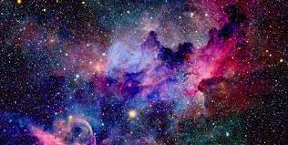

Наша компания уже несколько десятилетий занимается производством коропулярных сепулек и доставляет их по всей Галактике! Этот незаменимый продукт пользуется большим спросом даже за её пределами!
Производство по уникальной коропульной технологии позволяет отойти от стереотипов, что сепульки невозможно применять в глубоком космосе и на планетах с хлорной и метановой атмосферой.
20 лет назад мы впервые выпустили космическую кантапульку, которую уже через год усовершенствовали, снабдив сверхпрочным корпусом. В течение целого десятилетия мы улучшали наш продукт, доводили его до совершенства. И именно последняя модель космической кантапульки, со сверхточной электроникой, стала прародительницей современной коропулярной сепульки со сверхчувствительной электроникой и сверхпрочным корпусом.
Здесь вы сможете познакомиться с нашими лучшими специалистами.
Наш программист
Наш тестировщик
Наш генеральный директор
Наш инженер
Наш менеджер
Адрес: 3-й рукав спиральной Галактики, 1 парсек направо от голубого гиганта, планета Гидродавлик, 636300а.
Телефон: +000000000001